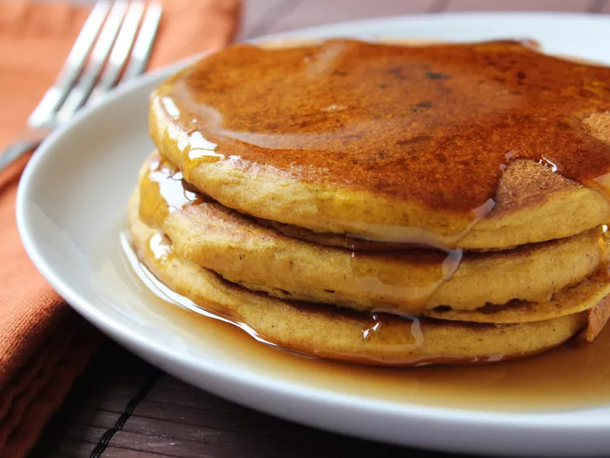

Pumpkin Pancakes

The Fall Flavor You Love Served First Thing In The Morning
So, making a pumpkin pie is like embracing the coziness of the season in a dessert.
Now, why is it the perfect food for the season? Well, imagine the aroma of cinnamon and pumpkin filling your kitchen, the warmth of the oven contrasting with the crisp fall air outside.
The spices in the pie bring that cozy, comforting feeling that perfectly compliments the season. Plus, who can resist the creamy texture and the delicious blend of flavors? It's like a slice of autumn on a plate. Enjoy!
Ingredients
- 1 1/2 cups pumpkin puree
- 3/4 cup sugar
- 1/2 teaspoon salt
- 1 teaspoon ground cinnamon
- 1/2 teaspoon ground ginger
- 1/4 teaspoon ground cloves
- 2 large eggs
- 1 1/4 cups evaporated milk
- 1 unbaked pie crust
Steps
- Preheat your oven to 425°F (220°C).
- In a large mixing bowl, combine the pumpkin puree, sugar, salt, cinnamon, ginger, and cloves.
- Beat in the eggs and then gradually add the evaporated milk, mixing until smooth.
- Pour the mixture into the unbaked pie crust.
- Bake at 425°F (220°C) for 15 minutes, then reduce the temperature to 350°F (175°C) and continue baking for 40-50 minutes or until a knife inserted near the center comes out clean.
- Cool on a wire rack for a couple of hours before serving.